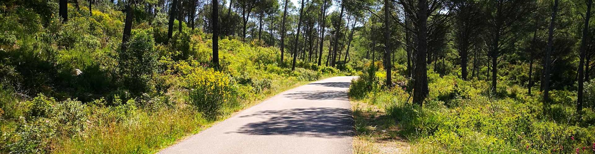

Ruta · Montgrí
Us animem a fer aquesta ruta en BTT pel Parc Natural gaudirem de grans paisatges d'interès natural i paratges únics de les nostres terres. És llarga però molt gratificant . Pedalada rere pedalada…